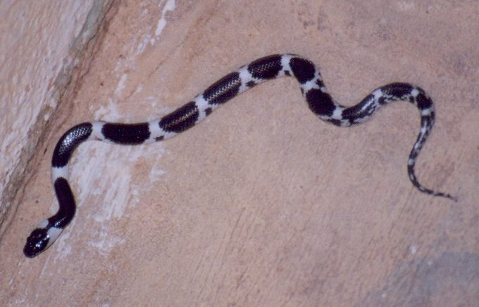

कौड़िया साँपCommon Wolf Snake
Lycodon aulicus · Colubridae · REP-0012

- Scientific name
- Lycodon aulicus (Linnaeus, 1758)
- Family
- Colubridae
- Hindi
- कौड़िया साँप
- Status here
- native
- IUCN
- LC
When to look कब देखें
Present all year.
कौड़िया साँप / Common Wolf Snake
Lycodon aulicus (Linnaeus, 1758) — Colubridae
कौड़िया साँप (कॉमन वोल्फ स्नेक) — घरों और मानव बस्तियों में पाया जाने वाला एक बहुत ही सामान्य और पूरी तरह से विषरहित (non-venomous) व हानिरहित सांप है। इसका शरीर गहरा भूरा या भूरा-काला होता है, जिस पर पीले-सफेद या क्रीम रंग की आड़ी पट्टियां (crossbands) होती हैं। यह सांप दिखने में बेहद जहरीले करैत सांप ([REP-0006 Common Krait]) जैसा लगता है, जिसके कारण लोग इसे अक्सर गलती से करैत समझकर मार देते हैं। यह सांप उत्कृष्ट पर्वतारोही (climber) होता है और रात के समय घरों की दीवारों व छतों पर रेंगने वाली छिपकलियों का शिकार करता है। इसके मुंह के आगे के दांत नुकीले और भेड़िए जैसे होते हैं (जिससे इसे वोल्फ स्नेक नाम मिला), जो चिकनी छिपकलियों को पकड़ने में मदद करते हैं। इसका व्यवहार शांत होता है, लेकिन पकड़े जाने पर यह बचाव में काट सकता है, हालांकि इसका दंश बिल्कुल हानिरहित होता है।
Quick Identification त्वरित पहचान
| Feature | Description |
|---|---|
| Form | Slender, slightly flattened body; tail is moderate and tapers to a fine point |
| Head | Flat and spatulate (pear-shaped), scarcely wider than the neck; snout is broad and rounded |
| Markings | 10–20 broad white or cream-coloured crossbands that start immediately behind the head/neck and expand on the sides |
| Scales | Smooth, shiny, and uniform on the back; lacks enlarged vertebral scales |
| Eyes | Small, entirely black, with vertical slit-like pupils (often hard to see) |
| Behaviour | Excellent climber; found inside houses, on rafters, or climbing walls at night; mimics krait behaviour when cornered but does not hiss |
Field tip: Any dark brown banded snake found climbing a wall inside a house at night is almost certainly a Common Wolf Snake. Unlike the venomous Common Krait, its bands start right on its neck (not mid-body) and it lacks the row of large hexagonal scales along its spine. It is harmless.
Morphology आकारिकी
Biometrics (typical measurements for adult specimens in plains of northern India):
| Measurement | Range |
|---|---|
| Tail length | 8–12 cm |
| Total length | 50–80 cm |
| Weight | 100–250 g |
Dorsal pattern: The dorsal ground colour is glossy dark brown or blackish-brown. It features 12–20 white, pale yellow, or cream crossbands. These bands are broadest on the lower sides of the body and narrowest at the backbone. The first band forms a collar-like ring right behind the head. The belly is solid pearl-white or cream.
Scales: Dorsal scales are smooth, highly polished, and arranged in 17 rows at midbody. There is no row of enlarged hexagonal vertebral scales along the spine; all dorsal scales are similar in size.
Dentition: Aglyphous dentition (lacks fangs). Possesses enlarged, backward-curved, fang-like teeth at the front of the upper jaw (maxilla) and lower jaw (dentary). These "wolf-like" teeth are solid (not hollow or grooved) and are used to grip smooth-skinned prey.
Behaviour & Ecology व्यवहार और पारिस्थितिकी
Nocturnal climber and escape artist.
- Climbing ability: Extremely agile climber. The slightly flattened belly scales help it scale rough brick walls, vertical wooden beams, and crawl through thatched roofs to hunt.
- Diurnal hiding: Spends the day hidden in dark, tight spaces — under wooden boxes, behind cupboards, in cracks of mud walls, or inside piles of roof tiles.
- Defensive behavior: When cornered, it hides its head beneath its coils. If handled or provoked, it will strike repeatedly and bite aggressively, occasionally secreting a foul-smelling liquid from its cloaca, but it cannot inject venom.
Ecological Role पारिस्थितिक भूमिका
Household predator and gecko controller. The Common Wolf Snake plays an important ecological role in human settlements by hunting geckos ([REP-0003 House Gecko]) and mice. By hunting inside grain stores and homes, it regulates household pest populations, acting as a natural pest control agent.
Life Cycle / Phenology जीवन चक्र
- Breeding: Breeding occurs in late spring and early summer (April–June).
- Reproduction: Oviparous (egg-laying).
- Egg-laying: The female lays a clutch of 5 to 11 elongated, white, leathery eggs inside wall crevices, under wood piles, or in loose soil in June–July.
- Hatching: The eggs hatch after 45–55 days. Hatchlings are about 14–17 cm long, carrying distinct white bands, and are fully independent.
Host Plants or Prey आहार
Carnivorous diet:
- Primary prey: Geckos (
[REP-0003 House Gecko]) and skinks ([REP-0014 Common Keeled Skink]). - Alternative prey: Small mice (Mus musculus), frogs, and occasionally small birds or insects.
Predators / Natural Enemies शत्रु
- Venomous snakes: The Common Krait (
[REP-0006 Common Krait]) and Indian Cobra ([REP-0005 Indian Cobra]) are major predators of this species. - Household animals: Domestic cats and dogs frequently kill wolf snakes in homesteads.
- Birds of Prey: Owls and daytime birds of prey hunt them if they are caught in the open.
Agricultural / Human Relevance कृषि प्रासंगिकता
Batesian mimicry and human conflict. The Common Wolf Snake is a classic example of Batesian mimicry, where a harmless species mimics a dangerous one (the Common Krait) to deter predators. However, this mimicry often backfires with humans: because rural residents cannot easily tell the two species apart, the harmless wolf snake is frequently killed on sight.
Expected Locally स्थानीय रूप से अपेक्षित
Not a field record. Written from published accounts for eastern Uttar Pradesh. No confirmed local sighting yet — if you have seen it, that is what the atlas needs.
अभी तक स्थानीय पुष्टि नहीं। यह विवरण प्रकाशित स्रोतों से है, किसी अवलोकन से नहीं।
Very common inside both traditional mud-and-thatch houses and modern concrete buildings in Basti district. Sighted often during the monsoon (July–September) when they climb walls to seek dry areas. They are frequently found near home grain storage bins (kothi).
Distribution वितरण
Global range: Widespread across South Asia, including Pakistan, India, Nepal, Bangladesh, Sri Lanka, and Southeast Asia. (Introduced populations exist in Mauritius and Reunion).
In India: Found throughout the plains and hills up to 2,000 metres.
In Uttar Pradesh: Extremely common resident in all districts.
In Basti district / eastern UP: Abundant in all blocks, particularly in human-dominated environments.
Research Questions शोध प्रश्न
- How can we design effective visual training materials to help rural farmers in Basti distinguish between the Common Krait and the Common Wolf Snake? / ग्रामीण बस्ती के किसानों को करैत और कौड़िया सांप (Wolf Snake) के बीच अंतर समझाने के लिए कौन सी दृश्य-प्रशिक्षण सामग्री सबसे प्रभावी है?
- What is the seasonal activity pattern of Lycodon aulicus inside houses compared to outdoor garden habitats? / बगीचे के आवासों की तुलना में घरों के भीतर कौड़िया सांप की मौसमी गतिविधि में क्या अंतर होता है?
- What is the success rate of Lycodon aulicus when hunting Hemidactylus geckos on vertical concrete walls versus rough brick walls?
- How long does a Common Wolf Snake remain in winter dormancy in eastern UP, and does temperature influence its emergence?
- Can children create simple maps of where they find shed snake skins (kenchuli) of wolf snakes in their homes? — An engaging school-level citizen science project.
Similar Species मिलती-जुलती प्रजातियाँ
| Species | How to tell apart | हिंदी |
|---|---|---|
Bungarus caeruleus (Common Krait [REP-0006]) | Extremely venomous. White bands start midbody (not on the neck); possesses a row of large, hexagonal vertebral scales along the spine; snout is rounded; vertical pupils absent. | करैत — अत्यधिक विषैला, रीढ़ पर बड़ी षटकोणीय शल्कें, सिर पर धारियां नहीं |
| Lycodon striatus (Barred Wolf Snake) | Non-venomous; smaller; bands are yellowish-white and form a distinct grid-like or barred pattern with black spots inside the bands. | चित्तीदार कौड़िया — हानिरहित |
| Boiga trigonata (Common Cat Snake) | Non-venomous; light brown; has a wavy white/dark zig-zag band along the back; head has a dark Y-shaped mark; long slender tail. | कैट स्नेक — हानिरहित |
Summary of Wolf Snake vs. Common Krait Identification
Use this table to quickly verify the identity of a banded snake:
| Feature | Common Wolf Snake ([REP-0012]) | Common Krait ([REP-0006]) |
|---|---|---|
| Venom | Harmless (Non-venomous) | Deadly (Venomous) |
| Bands on Neck | Yes, first white band starts as a collar right behind the head. | No, the head and neck are solid black; white bands start mid-body. |
| Spine Scales | Normal, uniform, and same size as surrounding scales. | Distinct row of large, hexagonal scales running along the spine. |
| Head Shape | Flat, spatulate, depressed snout. | Rounded head, scarcely distinct from the neck. |
| Climbing | Frequently climbs vertical walls, rafters, and roofs. | Terrestrial; crawls on the ground, rarely climbs walls. |
Taxonomy & Classification वर्गीकरण
Original description. Carl Linnaeus described the Common Wolf Snake as Coluber aulicus in 1758 in his landmark Systema Naturae (ed. 10, p. 220). The type locality was listed as "America," which was an error corrected to India. The genus Lycodon Fitzinger, 1826 combines the Greek words lykos (wolf) and odous (tooth), describing the enlarged anterior teeth. The specific name aulicus is Latin for "of the court" or "princely," likely referring to its neat banded pattern.
Subspecies. Monotypic — no subspecies are currently recognised.
Family and order placement. Placed in the order Squamata, suborder Serpentes, family Colubridae, subfamily Colubrinae.
Phylogenetic notes. The genus Lycodon is a large group of nocturnal colubrid snakes widely distributed across Asia. Molecular phylogenetics shows that the genus is monophyletic and has undergone rapid diversification in tropical Asia.
IUCN status rationale. Listed as Least Concern (LC) by the IUCN Red List due to its extremely wide geographic range, high population density, and high adaptability to human-altered town and village environments. It faces no major conservation threats.
Photo Gallery फोटो गैलरी
References संदर्भ
- Linnaeus, C. (1758). Systema Naturae per regna tria naturae, secundum classes, ordines, genera, species, cum characteribus, differentiis, synonymis, locis. Tomus I. Editio decima, reformata. Laurentii Salvii, Holmiae, p. 220. [original description]
- Smith, M.A. (1943). The Fauna of British India, Ceylon and Burma: Reptilia and Amphibia. Vol. 3 — Serpentes. Taylor & Francis, London.
- Whitaker, R. & Captain, A. (2004). Snakes of India: The Field Guide. Draco Books, Chennai.
- Lanza, B. (1999). A new species of Lycodon from Sri Lanka. Tropical Zoology, 12: 123-134.
- IUCN SSC Snake and Lizard Specialist Groups (2024). Lycodon aulicus. IUCN Red List of Threatened Species.
- GBIF Occurrence Data — Lycodon aulicus, South Asia (2026). GBIF taxon key: 8641010.
Source file: species/fauna/reptiles/common_wolf_snake.md